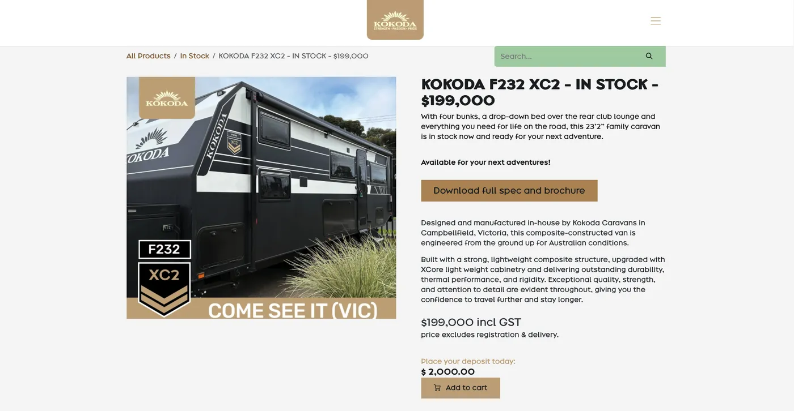
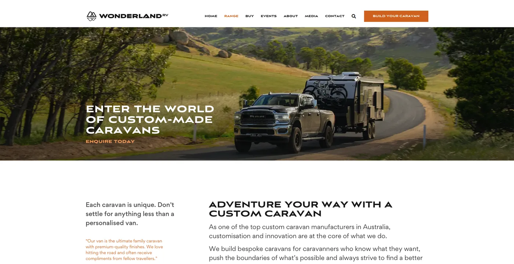

Four lenses
Two reviews and two conversations, so that no single view decided the direction.
The current website
Built around finance and servicing more than buying a caravan. It competed with its parent’s own sales page, and its listings showed specs that mean nothing to a buyer comparing two vans.
The competitors
Availability is unclaimed: rivals sell made-to-order with a months-long wait, and Outbound has finished vans on the ground. Local search is crowded, and one rival already takes a deposit online.
Brand discovery questionnaire
Twelve questions around brand discovery, answered in writing by the directors. Written answers can be quoted, compared and returned to months later. A conversation cannot.
The sales team
I asked for the sales process as they actually run it, and which questions they answer again and again. Designing for the staff turned out to be a way of designing for the customer.


Findings that moved the work
Each finding changed a decision. The decision is stated under it.
- Finding
Premium where it matters
One respondent wanted a luxurious dealership experience. Another disagreed: the vans should be the hero. The line that settled it: looking luxurious is different from delivering a premium product.A monochrome interface, with space and photography carrying the premium.
- Finding
Capable, not tough
Everyone drifted from tough to capable: engineered, controlled and quietly confident. “Luxury without compromising capability” was the sharpest line anyone offered.It became the positioning line, and tough dropped out of the vocabulary.
- Finding
Weights are a conversion problem
Weights came up unprompted in three answers, and two of the four deal killers are weight related. The old site showed kilometres travelled instead of tare and ATM.Every stock page shows weight and compatible towing vehicles.
- Finding
Some buyers are early, not lost
Some people are six to twelve months from a deposit. Nothing on the old site held them.Build trust with them in the meantime so Outbound is where they return.
- Finding
The build journey is content
Plans and specs, elevations, production, weekly progress photos, handover. Invisible to anyone who has not yet bought.The ownership journey becomes a section of the site, drawn as two paths.
One sentence
Wonderland promises a lifestyle. Outbound sells the product that delivers it.
Outbound’s job is the buying experience and the ownership experience that follows, not the dream itself. Once that landed, the brand and the website both had a purpose to design towards. The guesswork stopped.
Who it is for
Buyers run from 35 to 70. For design purposes we target 35 to 55. Families outweigh couples.
Wonderland’s family layouts, up to six bunks, support the younger end of that range. There are four models, and the ladder between them does real work.
Buyers often start at Amaroo on budget, then move up when a specced Amaroo approaches Hornet money. Putting the price bands side by side lets the site do work a salesperson currently does on the phone.
It moved three times
Each move came from evidence, not opinion.
The site sells caravans
Where we started, and it was wrong. Nobody buys a two hundred thousand dollar van from a web page.
Get buyers into the showroom
Closer. Then the sales data moved it again: some customers buy on a call and have the van delivered without ever visiting.
Bring in leads for the team
Where it landed. More sales is the business goal, but conversion belongs to the sales team. Lead volume is the part design owns.
Earn the enquiry
The site does not close the sale. It gets a buyer interested enough to call, enquire or drive to Campbellfield.
Answer before they ask
Give a buyer enough to justify reaching out, and to arrive with the obvious questions already settled.
Lead with stock
Aged stock is the commercial priority. Made to order stays available but deliberately quieter.